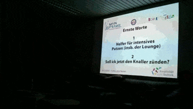

{% block content %}
{% filter markdown|typogrify -%}
### Mietvertrag
Nach einigen intensiven Vertragsverhalndungen in den letzten Wochen haben
Patrick (MarvinGS) und Thomas (tmp) es geschafft direkt vor dem Treffen ohne
Namen den Mietvertrag vom Vermieter in Bremen abzuholen und so zunächst die
freudige Kunde auf dem Treffen zu überbringen:

Vielen, vielen, vielen (!) Dank vom BGB-Vorstand an alle Beteiligten. Wer
nicht dabei war, kann sich nicht vostellen, wie viel Zeit von uns und
anderen da rein geflossen ist.
Besonders hervorheben möchten wir unseren Experten Thomas alias tmp, der über
einen langen Zeitraum Unmengen an Zeit in BGB-Vorstands-Beratung, Recherchen,
Formulierungen und immer wieder neue Varianten und deren verständliche
Darreichung investiert hat. Außerdem war er zum entscheidenden Termin mit
Patrick beim Vermieter in Bremen, um all unsere Punkte und Wünsche zu erklären
und zu verhandeln.
### Großbaustellen-Pause
Mit großer Mehrheit hat die Gruppe von Treffen ohne Namen für eine Pause bei
der Durchführung von größeren Projekten abgestimmt. Ziel ist die Weihnachtszeit
und die darauf folgenden Monate etwas entspannter anzugehen und diverse kleine
Projekte voranzutreiben. Ausdrücklich nicht gestoppt werden die Planungen für
unsere Großbaustellen, sowie das Entfernen der Küche aus der E-Werkstatt.
### Not-Küche vs. E-Werkstatt
Wie bereits erwähnt soll als nächstes die E-Werkstatt von der temporären
Küche befreit werden. Hierzu soll an der Position der neuen Küche zunächst
ein weiteres Provisiorium geschaffen werden, da der Aufbau der Zielküche
noch weitere Abhängigkeiten hat.
### Alpha(s), Vorträge & Hackathons
Ein weiteres Ergebnis des Treffens sind verschiedene, früher bereits
durchgeführte Aktionen, die wiederbelebt werden sollen. Betroffen sind
hiervon drei Dinge:
#### Alpha
Um olt herum findet sich eine Gruppe, welche eine weitere
Alpha durchführen möchte.
Wer sich beteiligen möchte meldet sich am besten bei olt.
#### Hackathon
Eine weitere Gruppe um mgr würde im Januar gerne einen Hackathon im Space
veranstalten. Pläne zum Hackathon gibt es im
Hackathon Pad.
#### Vortragsprogramm
sre hat vorgeschlagen unser Vortragsprogramm wiederzubeleben. Details hierzu
sind noch in Arbeit, anvisiert ist jedoch im Januar zu starten (vermutlich
mit dem ersten Vortrag während der Alpha/des Hackathons).
{%- endfilter %}
{% endblock content %}